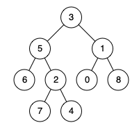

题面
给定一个二叉树, 找到该树中两个指定节点的最近公共祖先。
百度百科中最近公共祖先的定义为："对于有根树 T 的两个节点 p、q，最近公共祖先表示为一个节点 x，满足 x 是 p、q 的祖先且 x 的深度尽可能大（一个节点也可以是它自己的祖先 ）。"
示例 1：

输入： root = [3,5,1,6,2,0,8,null,null,7,4], p = 5, q = 1
输出： 3
解释： 节点 5 和节点 1 的最近公共祖先是节点 3 。示例 2：
输入： root = [3,5,1,6,2,0,8,null,null,7,4], p = 5, q = 4
输出： 5
解释： 节点 5 和节点 4 的最近公共祖先是节点 5 。因为根据定义最近公共祖先节点可以为节点本身。示例 3：
输入： root = [1,2], p = 1, q = 2
输出： 1提示：
- 树中节点数目在范围
[2, 105]内。 -109 <= Node.val <= 109- 所有
Node.val互不相同。 p != qp和q均存在于给定的二叉树中。
思路
- 这题是后序遍历（先知道左右子树的结果，再判断自己）
- 写递归不要从"后序模板"出发，而是问自己三个问题：
- 函数返回值是什么意思？ → 在以 node 为根的子树里，找到 p 或 q 就返回它，没找到返回 None
- 站在一个节点，我需要什么信息？ → 左子树和右子树各自找到了没有 → 自然就是先递归左右再判断（后序）
- 拿到信息后怎么判断？ → 见下面
- 最近公共祖先只有两种情况：
情况一：p 和 q 分居左右子树 情况二：自己就是 p（或 q），另一个在子树里
3 ← 答案 5 ← 答案
/ \ / \
5 1 6 2
(p) (q) / \
7 4(q)- 递归逻辑：
node为空 → 返回 Nonenode就是 p 或 q → 直接返回自己（不用再往下找）- 递归左右子树，拿到
left和right left和right都不为 None → p 和 q 分居两侧，当前节点是答案- 只有一边不为 None → 往上传递那一边的结果
- 为什么碰到 p/q 就直接返回，不继续递归？ 如果 q 在 p 的子树里，p 本身就是最近公共祖先，不需要再往下找了
和之前题目的对比
题目 | 函数返回什么 | 需要什么信息 | 自然就是 |
|---|---|---|---|
maxDepth | 子树的最大深度 | 左右各多深 | 后序 |
直径 | 子树的最大深度（顺便更新答案） | 左右各多深 | 后序 |
本题 | 找到的目标节点或 None | 左右各自找到了吗 | 后序 |
前缀和(437) | 无（副作用模式） | 从根到自己的累加和 | 先序 |
规律：需要"先知道子树的结果再做判断" → 后序。需要"先处理自己再递归子树" → 先序。
代码实现
class Solution:
def lowestCommonAncestor(self, root: 'TreeNode', p: 'TreeNode', q: 'TreeNode') -> 'TreeNode':
def dfs(node):
if not node:
return
if node == p or node == q:
return node
left = dfs(node.left)
right = dfs(node.right)
if left and right:
return node
return left if left else right
return dfs(root)- 易错点：
- `if node == p or node == q: return node` 要写在递归之前：碰到目标就直接返回，不需要继续往下递归。如果写在后面，会多做无用递归，且逻辑更复杂
- 上层只看返回值是不是 None：不关心返回的具体是 p 还是 q，只关心"那边有没有找到"
- `return left if left else right`：两边都没找到时 right 也是 None，刚好返回 None。别写成
return left or right（行为一样但可读性差） - 这题是 return 传值模式（后序）：每层必须接住左右子树的结果再判断，和 maxDepth 是同一类递归结构
- 复杂度：时间 O(n)，空间 O(n)（递归调用栈）